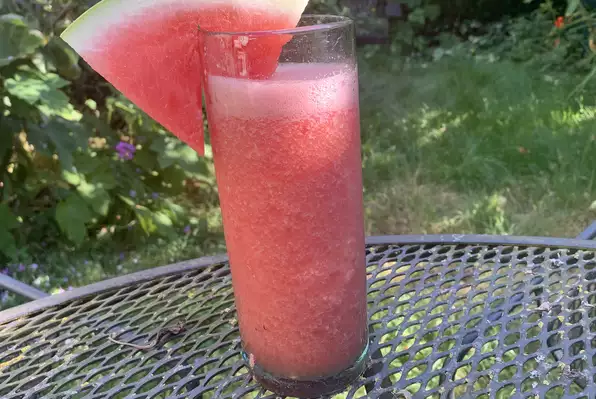

Odin Recipes Watermelon Cooler Slushie
Watermelon Cooler Slushie

Watermelon cooler slushie, easy to make and fun to share with friends on a hot summer day!
Ingredients
- 4 cups cubed seedless watermelon
- 4 cups cubed seedless watermelon
- ⅓ cup fresh lime juice
- ¼ cup white sugar
- ⅛ teaspoon salt
Method
- Place watermelon and ice into a blender
- Pour in lime juice, sugar, and salt into the blender
- Blend until smooth.
- Dip the rim of glass in lime and salt, pour contents into cup and enjoy!
Are you interested in more recipes? See the links below
Kentucky Tomato Soup Recipe